AI can tutor.Can you seewhat it taught?
AI can explain almost anything.
OpenTutor is thelearning record.
 Read the manifesto
Read the manifestoHere from Reddit or Hacker News? Thanks for stopping by.
We’d love to work with you.
 THE THESIS
THE THESIS
A supervised learning
operating system.
Home education needs one place where curriculum, conversation, tutoring, and student work all stay in view.
OpenTutor is a working white paper for AI-assisted, educator-supervised learning. A version-controlled library can hold the curriculum; schools and families choose suitable classroom tools and set clear guardrails.
Governance before automation
Parent oversight is a design requirement. It belongs in the system from the beginning.
Transparency by default
Assignments, revisions, feedback, and progress live in open tools, not a proprietary dashboard.
Continuity of evidence
Daily tutoring connects to a long-term portfolio that is easy to audit and support.
 THE DIFFERENCE
THE DIFFERENCE
Closed dashboard.
Open workflow.
| Learning system | Typical AI learning apps | OpenTutor |
|---|---|---|
| Where the work lives | Inside the vendor's dashboard. | In a GitHub repo you own, with a full revision history. |
| Where help happens | In a separate chat window. | In a teacher-approved learning space, next to assignments and lesson discussion. |
| Who is in charge | The product decides what the tutor does. | The educator. Access, prompts, safeguards, and pacing are set by the responsible adults. |
| Can you inspect it | Rarely. Prompts and logic are hidden. | Yes. Prompt files, skills, and bot code are visible and reviewable. |
| Evidence of growth | Progress scores inside the app. | A portfolio of commits, drafts, projects, and notes. |
| Best for | Families who want something turnkey. | Parents and small programs comfortable operating their own tools. |
Who it's for?
Homeschool families
Primary. Parent-led families who want visible, reviewable AI-assisted instruction and a long-term record of growth.
Microschools and pods
Secondary. Independent tutors and small programs coordinating several students on lightweight, open infrastructure.
Schools and institutions
Emerging. Schools piloting supervised AI and portfolio-based documentation before wider adoption.
 THE TUTOR
THE TUTOR
The tutor belongs
where class happens.
An optional AI tutor can respond in an approved learning space, use tools only when needed, and offer a clear next step.
It supports learning through explanation, practice, and scaffolding without replacing an educator. Access to learner information must remain limited to authorized adults and systems.

ILLUSTRATIVE EXCHANGE / #math-helpSIG // SIMULATED
// SIMULATED THE RECORD
THE RECORD
The work needs
a place to live.
Assignments, teacher tools, references, and datasets sit together in a maintained library, not a fixed curriculum. Keep identifiable learner folders and submissions in private, access-controlled storage.
learning-center/ assignments/ resources/ students/ teachers/ .github/workflows/

FIG. A / SHARED STACKShared material, student work, teacher tools, and dashboards each get their own place.
students/student-name/
grade-5/
math/
stem/
language-arts/
social-studies/
schedule.csv
README.md FIG. B / LEARNER STACK
FIG. B / LEARNER STACKEach learner gets a durable folder for subjects, schedules, and portfolio work.
Adults stage the program in folders they can inspect, like assignments/social-studies/ and teachers/ai-assistants/. Reference material such as formulas, grammar rules, and datasets lives under /math, /science, /reading, and /projects. AI helps turn it into rubrics, worksheets, and review materials.
 THE SETUP
THE SETUP
From first commit
to classroom.
Accounts and repos
Start with parent-owned GitHub accounts and repositories, so work and revision history stay under your control. Check account age requirements before creating student accounts.
The classroom server
Create a Discord server with clear subject channels, plus admin and logs channels reserved for oversight. Check account age requirements for your learners.
Install the tutor
Create the Discord application and bot user, grant only the permissions the classroom needs, then run the tutor with your bot token and Anthropic key.
Optional: a coding agent
Agentic coding tools can help draft unit plans, assignment templates, and rubrics. You stay the final reviewer and standards owner.
 THE DAY
THE DAY
One school day.
A visible trail.
Morning check-in
The parent posts priorities and links to the right subject folders. Students know today's tasks and expected commits.
Subject work
Students move through folders and materials. Notes, drafts, and responses land where they belong.
Tutor window
Vibe rephrases directions, explains concepts, and helps students restart, so questions become next steps.
Progress review
The parent checks completed work and blockers, and can redirect without losing the day's trail.
Projects
Coding, design, research, or portfolio work. Code, websites, drafts, and assets become durable evidence.
Commit and plan
Students save finished work, note what changed, and name the next step. The parent gets a clean record.


 THE GUARDRAILS
THE GUARDRAILS
Keep asking
the hard questions.
Does Vibe run the classroom?
No. Parents keep authority over curriculum, pacing, permissions, and structure. Vibe supports learning and has no server-management role.
Can I see how Vibe behaves?
Yes. Prompt rules and skill files are visible and reviewable, and the bot's code is open source.
What can Vibe reach outside Discord?
Only scoped, explicit tools: schedules, GitHub files, web and URL lookup, and weather. Each is reviewable.
Is the AI making decisions for my child?
It explains and scaffolds. The parent sets the standards and reviews the work, and repositories keep revisions and growth visible.
Is this an accredited curriculum?
No. It is an experimental operating model, not a turnkey accredited school or compliance platform.
 IN THE OPEN
IN THE OPEN
OpenTutor
Make learning visible.
Build your classroomOpenTutor and Vibe are open-source homeschool infrastructure. Stars and forks help others find and improve it. Donations fund API costs, curriculum upkeep, documentation, and development.

Bitcoin
3AWfncSFKENu47mDUhyZU1tvAULPzkSdZ8Ethereum / EVM
0x6B71F8F87F7eA31628149D70B9d178cB3E357A90